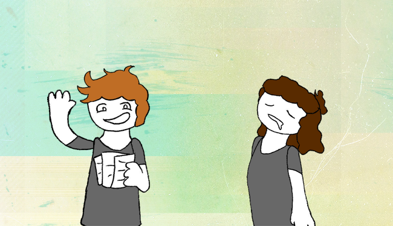

...

פרק ג'
בחרנו ביצירות מז'אנרים שונים ובחרנו להתמקד בנושא משותף ביניהן, כפילים והשתקפויות. בכל יצירה הנושא תורם לבניית הדמות בצורה ייחודית ואנו נשווה בין האופן שבו היוצרים משתמשים בכפילים למען בניית הדמויות שלהם. אנחנו עומדים להתייחס ל"בניית דמות" מכיוון של קוראים - לא מכיוון הסופרים - זאת אומרת התפתחות הדמות ואיך היא מוצגת במהלך הסיפור ולא התהליך שהסופר עושה עם דמויותיו כדי שיוכל לכתוב אותן. אמצעים לבניית דמות שמתאפשרים בעת שימוש בכפילויות מושפעים משמעותית מטבעם של הכפילים ביצירה והמתרחש בעלילה, כך שאמצעי שעובד ביצירה מסוימת לא בהכרח יעבוד ביצירה אחרת. האמצעים שאנו נדבר עליהם כוללים שינוי ישיר - כאשר הפגישה עם הכפיל גורמת לדמות לגדול או להשתנות, הצגת פוטנציאל - כאשר הכפיל מראה מה הדמות יכלה להיות בסיטואציה כזו או אחרת בלי שינוי של דמות "המקור", שיקוף תכונות אופי אשר קיימות בדמות המקור אך לא ברורות מאליו ושילוב של כל האמצעים. בנוסף לכך נדבר על הקונטקסט וגורמים מסביב לאמצעים בכל יצירה. מודעות לכפילים מצד הדמויות תורמת משמעותית לכיוון של בניית הדמות בהמשך הסיפור. אם הדמות יודעת שדמות או חפץ משקפים את האישיות שלה, מודעות עצמית של הדמות לאישיות ומעשים שלה כנראה גבוהה יותר. ב"הומסטק" דייב ווריסקה מודעים לזה שדייבספרייט ווריסקה-ב הם גרסאות שונות של עצמם מקווי זמן אחרים, וזה משפיע עליהם - דייב מתחיל לחקור את האישיות שלו ומנסה למצוא דרך להשתפר כבן אדם בעקבות הפגישה עם דייבספרייט, שדייב מחשיב אותו לגרסה יותר טובה של עצמו. וריסקה רואה תכונות של וריסקה-ב שהיא מחשיבה לחולשה ובזבוז זמן, אך הפגישה שלה אם וריסקה-ב לא גורמת לשינוי ישיר בניגוד לפגישה של דייב עם דייבספרייט.
בדומה להומסטק, ב"תמונתו של דוריאן גריי" מודעות של דוריאן לאופן שבו התמונה עובדת משפיעה על תהליך של בניית הדמות. דוריאן מודע לכך שהתמונה מזדקנת במקומו אך מסרב לקבל את הרעיון שהתמונה משקפת את מעשיו ואת מוסריות שלו, שזה חלק מהסיבה לכך שהוא מחביא את התמונה ולא רואה אותה במשך זמן רב. כאשר עובדה זו נהיית יותר ברורה לדוריאן אנו רואים בו רגשות אשם, צד של דוריאן שהסיפור לא מראה הרבה, ואנו רואים ניסיון של דוריאן לשנות את דרכיו. בובי והילד במראה מודעים להשפעה שלהם אחד על השני, ומשתמשים בזה כאשר יש קונפליקט ביניהם, אך בניגוד להומסטק או תמונתו של דוריאן גריי, מודעות זו לא משפיע על בניית הדמות בסיפור. ב"פרנקנשטיין", בניגוד לשאר היצירות, לויקטור וליצור אין מודעות לכך שהם משקפים את המעשים ואת האישיות אחד של השני, אך בדומה ל"בובי" אין לחלק זה השפעה על בניית דמות - אפילו שהסיבה האפשרית לכך שמודעות לא השפיעה על בניית הדמות של בובי והילד במראה היא אורך של השיר שלא נתן מספיק זמן לדמויות להגיע לנקודה זו. בזמן שמודעות של הדמויות לכפילים ב"בובי" או חוסר מודעות ב"פרנקנשטיין" לא תורמות לבניית דמות דרך שינוי ישיר, המידע הזה עוזר לקורא להבין יותר טוב את הדמויות דרך שיקוף תכונות והצגת פוטנציאל.
ב"בובי", ברגע שאנו מתייחסים להשפעה של בובי על הילד במראה וההפך, אנו רואים שאפשר לייחס את חלקים מהאישיות של בובי לילד במראה בזכות היותם השתקפות אחד של השני, כמו שציינו בפרק ב'. סוג דומה של בניית דמות לא ישירה קורא בהומסטק אצל וריסקה - הפגישה בין וריסקה לוריסקה-ב לא תורמת לשינוי של אף אחת מהדמויות, והשינוי של וריסקה-ב כבר קרה לפני הפגישה, למרות זאת יש לקוראים הזדמנות להשוות ביניהן, להעביר קווי דמיון ושוני ולראות מה וריסקה הייתה יכולה להיות. אין פה שינוי ישיר בניגוד לדייב מהומסטק או תמונתו של דוריאן גריי אך הקוראים רואים צדדים חדשים של הדמויות בכל זאת. מבחינה זו "פרנקנשטיין" דומה ל"בובי" - ויקטור והיצור משקפים אחד של השני במעשים ואישיות (אפילו שאף אחד מהם לא מבין את זה), ובמשך רב הסיפור גם ויקטור וגם היצור הן דמויות סטטיות שלא עוברות שינוי או גדלות אחרי שלבים מוקדמים בסיפור. מה שנותן מקום לבניית דמות דרך כפילים ב"פרנקנשט-י
בחרנו ביצירות מז'אנרים שונים ובחרנו להתמקד בנושא משותף ביניהן, כפילים והשתקפויות. בכל יצירה הנושא תורם לבניית הדמות בצורה ייחודית ואנו נשווה בין האופן שבו היוצרים משתמשים בכפילים למען בניית הדמויות שלהם. אנחנו עומדים להתייחס ל"בניית דמות" מכיוון של קוראים - לא מכיוון הסופרים - זאת אומרת התפתחות הדמות ואיך היא מוצגת במהלך הסיפור ולא התהליך שהסופר עושה עם דמויותיו כדי שיוכל לכתוב אותן. אמצעים לבניית דמות שמתאפשרים בעת שימוש בכפילויות מושפעים משמעותית מטבעם של הכפילים ביצירה והמתרחש בעלילה, כך שאמצעי שעובד ביצירה מסוימת לא בהכרח יעבוד ביצירה אחרת. האמצעים שאנו נדבר עליהם כוללים שינוי ישיר - כאשר הפגישה עם הכפיל גורמת לדמות לגדול או להשתנות, הצגת פוטנציאל - כאשר הכפיל מראה מה הדמות יכלה להיות בסיטואציה כזו או אחרת בלי שינוי של דמות "המקור", שיקוף תכונות אופי אשר קיימות בדמות המקור אך לא ברורות מאליו ושילוב של כל האמצעים. בנוסף לכך נדבר על הקונטקסט וגורמים מסביב לאמצעים בכל יצירה. מודעות לכפילים מצד הדמויות תורמת משמעותית לכיוון של בניית הדמות בהמשך הסיפור. אם הדמות יודעת שדמות או חפץ משקפים את האישיות שלה, מודעות עצמית של הדמות לאישיות ומעשים שלה כנראה גבוהה יותר. ב"הומסטק" דייב ווריסקה מודעים לזה שדייבספרייט ווריסקה-ב הם גרסאות שונות של עצמם מקווי זמן אחרים, וזה משפיע עליהם - דייב מתחיל לחקור את האישיות שלו ומנסה למצוא דרך להשתפר כבן אדם בעקבות הפגישה עם דייבספרייט, שדייב מחשיב אותו לגרסה יותר טובה של עצמו. וריסקה רואה תכונות של וריסקה-ב שהיא מחשיבה לחולשה ובזבוז זמן, אך הפגישה שלה אם וריסקה-ב לא גורמת לשינוי ישיר בניגוד לפגישה של דייב עם דייבספרייט.
בדומה להומסטק, ב"תמונתו של דוריאן גריי" מודעות של דוריאן לאופן שבו התמונה עובדת משפיעה על תהליך של בניית הדמות. דוריאן מודע לכך שהתמונה מזדקנת במקומו אך מסרב לקבל את הרעיון שהתמונה משקפת את מעשיו ואת מוסריות שלו, שזה חלק מהסיבה לכך שהוא מחביא את התמונה ולא רואה אותה במשך זמן רב. כאשר עובדה זו נהיית יותר ברורה לדוריאן אנו רואים בו רגשות אשם, צד של דוריאן שהסיפור לא מראה הרבה, ואנו רואים ניסיון של דוריאן לשנות את דרכיו. בובי והילד במראה מודעים להשפעה שלהם אחד על השני, ומשתמשים בזה כאשר יש קונפליקט ביניהם, אך בניגוד להומסטק או תמונתו של דוריאן גריי, מודעות זו לא משפיע על בניית הדמות בסיפור. ב"פרנקנשטיין", בניגוד לשאר היצירות, לויקטור וליצור אין מודעות לכך שהם משקפים את המעשים ואת האישיות אחד של השני, אך בדומה ל"בובי" אין לחלק זה השפעה על בניית דמות - אפילו שהסיבה האפשרית לכך שמודעות לא השפיעה על בניית הדמות של בובי והילד במראה היא אורך של השיר שלא נתן מספיק זמן לדמויות להגיע לנקודה זו. בזמן שמודעות של הדמויות לכפילים ב"בובי" או חוסר מודעות ב"פרנקנשטיין" לא תורמות לבניית דמות דרך שינוי ישיר, המידע הזה עוזר לקורא להבין יותר טוב את הדמויות דרך שיקוף תכונות והצגת פוטנציאל.
ב"בובי", ברגע שאנו מתייחסים להשפעה של בובי על הילד במראה וההפך, אנו רואים שאפשר לייחס את חלקים מהאישיות של בובי לילד במראה בזכות היותם השתקפות אחד של השני, כמו שציינו בפרק ב'. סוג דומה של בניית דמות לא ישירה קורא בהומסטק אצל וריסקה - הפגישה בין וריסקה לוריסקה-ב לא תורמת לשינוי של אף אחת מהדמויות, והשינוי של וריסקה-ב כבר קרה לפני הפגישה, למרות זאת יש לקוראים הזדמנות להשוות ביניהן, להעביר קווי דמיון ושוני ולראות מה וריסקה הייתה יכולה להיות. אין פה שינוי ישיר בניגוד לדייב מהומסטק או תמונתו של דוריאן גריי אך הקוראים רואים צדדים חדשים של הדמויות בכל זאת. מבחינה זו "פרנקנשטיין" דומה ל"בובי" - ויקטור והיצור משקפים אחד של השני במעשים ואישיות (אפילו שאף אחד מהם לא מבין את זה), ובמשך רב הסיפור גם ויקטור וגם היצור הן דמויות סטטיות שלא עוברות שינוי או גדלות אחרי שלבים מוקדמים בסיפור. מה שנותן מקום לבניית דמות דרך כפילים ב"פרנקנשט-י